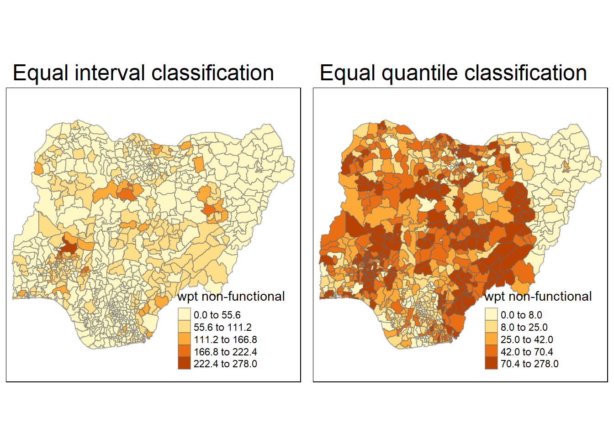

pacman::p_load(sf, tidyverse, tmap, spdep, funModeling)Take-home EX1
Take-home Exercise 1: Geospatial Analytics for Social Good
Setting the Scene
Water is an important resource to mankind. Clean and accessible water is critical to human health. It provides a healthy environment, a sustainable economy, reduces poverty and ensures peace and security. Yet over 40% of the global population does not have access to sufficient clean water. By 2025, 1.8 billion people will be living in countries or regions with absolute water scarcity, according to UN-Water. The lack of water poses a major threat to several sectors, including food security. Agriculture uses about 70% of the world’s accessible freshwater.
Developing countries are most affected by water shortages and poor water quality. Up to 80% of illnesses in the developing world are linked to inadequate water and sanitation. Despite technological advancement, providing clean water to the rural community is still a major development issues in many countries globally, especially countries in the Africa continent.
To address the issue of providing clean and sustainable water supply to the rural community, a global Water Point Data Exchange (WPdx) project has been initiated. The main aim of this initiative is to collect water point related data from rural areas at the water point or small water scheme level and share the data via WPdx Data Repository, a cloud-based data library. What is so special of this project is that data are collected based on WPDx Data Standard.
Objectives
Geospatial analytics hold tremendous potential to address complex problems facing society. In this study, you are tasked to apply appropriate global and local measures of spatial Association techniques to reveals the spatial patterns of Not Functional water points. For the purpose of this study, Nigeria will be used as the study country.
The Data
Apstial data
For the purpose of this assignment, data from WPdx Global Data Repositories will be used. There are two versions of the data. They are: WPdx-Basic and WPdx+. You are required to use WPdx+ data set.
Geospatial data
Nigeria Level-2 Administrative Boundary (also known as Local Government Area) polygon features GIS data will be used in this take-home exercise. The data can be downloaded either from The Humanitarian Data Exchange portal or geoBoundaries.
Getting Started
In the code chunk below, p_load() of pacman package is used to install and load the following R packages into R environment:
sf: used for importing, managing and processing geospatial data
tidyverse: a set of packages for data science
tmap: used to generate thematic maps
spdep: used to create spatial weights matrix objects
funModeling: used for rapid Exploratory Data Analysis
Importing Geospatial Data
In this in-class data, two geospatial data sets will be used, they are:
geo_export
nga_admbnda_adm2_osgof_20190417
Importing water point geospatial data
First, we are going to import the water point geospatial data (i.e. geo_export) by using the code chunk below.
wp <- st_read(dsn="geodata",
layer="geo_export",
crs=4326) %>%
filter(clean_coun == "Nigeria")Next, write_rds() of readr package is used to save the extracted sf data table (i.e. wp) into an output file in rds data format. The output file is called wp_nga.rds and it is saved in geodata sub-folder.
wp_nga <- write_rds(wp,
"geodata/wp_nga.rds")Importing Nigeria LGA boundary data
nga <- st_read(dsn="geodata",layer="nga_admbnda_adm2_osgof_20190417",
crs=4326)Data Wrangling
Recoding NA values into string
replace_na() is used to recode all the NA values in status_cle field into Unknown.
wp_nga <- read_rds("geodata/wp_nga.rds") %>%
mutate(status_cle = replace_na(status_cle, "Unknown"))EDA
freq() of funModeling package is used to display the distribution of status_cle field in wp_nga.
freq (data=wp_nga,
input = "status_cle")There are 9 different status of data, for the convenience of analysis, we will group them into 3 categories.
Functional: Functional, Functional but needs repair, Functional but not in use.
Non functional: Non-Functional, Non-Functional due to dry season, Non functional due to dry season, Abandoned
Unknown: Unknown
Extracting funtional water point
wpt_functional <- wp_nga %>%
filter(status_cle %in%
c("Functional",
"Functional but not in use",
"Functional but needs repair"))
freq(data=wpt_functional, input="status_cle")freq(data=wpt_functional,
input = 'status_cle')Extracting non-funtional water point
wpt_nonfunctional <- wp_nga %>%
filter(status_cle %in%
c("Abandoned/Decommissioned",
"Abandoned",
"Non-Functional",
"Non functional due to dry season",
"Non-Functional due to dry season"))freq(data=wpt_nonfunctional,
input = 'status_cle')Extracting water point with Unknown class
wpt_unknown <- wp_nga %>%
filter(status_cle == "Unknown")Performing Point-in-Polygon Count
nga_wp <- nga %>%
mutate(`total wpt` = lengths(
st_intersects(nga, wp_nga))) %>%
mutate(`wpt functional` = lengths(
st_intersects(nga, wpt_functional))) %>%
mutate(`wpt non-functional` = lengths(
st_intersects(nga, wpt_nonfunctional))) %>%
mutate(`wpt unknown` = lengths(
st_intersects(nga, wpt_unknown)))Saving the Analytical Data Table
nga_wp <- nga_wp %>%
mutate(pct_functional = `wpt functional`/`total wpt`) %>%
mutate(`pct_non-functional` = `wpt non-functional`/`total wpt`) %>%
select(3:4, 9:10, 18:23)Now, we have the tidy sf data table subsequent analysis. We will save the sf data table into rds format.
write_rds(nga_wp, "geodata/nga_wp.rds")Visualising the spatial dsitribution of water points
nga_wp <- read_rds("geodata/nga_wp.rds")
total <- qtm(nga_wp, "total wpt")
wp_functional <- qtm(nga_wp, "wpt functional")
wp_nonfunctional <- qtm(nga_wp, "wpt non-functional")
unknown <- qtm(nga_wp, "wpt unknown")
tmap_arrange(total, wp_functional, wp_nonfunctional, unknown, asp=1, ncol=2)
st_crs(nga_wp)Coordinate Reference System:
User input: EPSG:4326
wkt:
GEOGCRS["WGS 84",
ENSEMBLE["World Geodetic System 1984 ensemble",
MEMBER["World Geodetic System 1984 (Transit)"],
MEMBER["World Geodetic System 1984 (G730)"],
MEMBER["World Geodetic System 1984 (G873)"],
MEMBER["World Geodetic System 1984 (G1150)"],
MEMBER["World Geodetic System 1984 (G1674)"],
MEMBER["World Geodetic System 1984 (G1762)"],
MEMBER["World Geodetic System 1984 (G2139)"],
ELLIPSOID["WGS 84",6378137,298.257223563,
LENGTHUNIT["metre",1]],
ENSEMBLEACCURACY[2.0]],
PRIMEM["Greenwich",0,
ANGLEUNIT["degree",0.0174532925199433]],
CS[ellipsoidal,2],
AXIS["geodetic latitude (Lat)",north,
ORDER[1],
ANGLEUNIT["degree",0.0174532925199433]],
AXIS["geodetic longitude (Lon)",east,
ORDER[2],
ANGLEUNIT["degree",0.0174532925199433]],
USAGE[
SCOPE["Horizontal component of 3D system."],
AREA["World."],
BBOX[-90,-180,90,180]],
ID["EPSG",4326]]Visualising Regional Development Indicator
equal <- tm_shape(nga_wp) +
tm_fill("wpt non-functional",
n = 5,
style = "equal") +
tm_borders(alpha = 0.5) +
tm_layout(main.title = "Equal interval classification")
quantile <- tm_shape(nga_wp) +
tm_fill("wpt non-functional",
n = 5,
style = "quantile") +
tm_borders(alpha = 0.5) +
tm_layout(main.title = "Equal quantile classification")
tmap_arrange(equal,
quantile,
asp=1,
ncol=2)
To ensure the consistency of the analysis scale, the fixed distance method will be used. Determine the centroid for each area
coords <- st_centroid(st_geometry(nga_wp))Determine the cutoff distance for fixed distance weight matrix
k1 <- knn2nb(knearneigh(coords))
k1dists <- unlist(nbdists(k1, coords))
summary(k1dists) Min. 1st Qu. Median Mean 3rd Qu. Max.
2.675 12.814 20.300 22.075 27.800 72.027 The result shows that the maximum distance is 72.027.
threshold <- max(unlist(nbdists(k1, coords)))Computing Fixed distance weight matrix
wm_d73 <- dnearneigh(coords, 0, threshold)
wm_d73Neighbour list object:
Number of regions: 774
Number of nonzero links: 18050
Percentage nonzero weights: 3.012973
Average number of links: 23.32041 Each region have average 23 neighbors.
Visualizing the Distance weight Matrix
par(mfrow=c(1,2))
plot(nga_wp$geometry, border="lightgrey", main="1st nearest neighbours")
plot(k1, coords, add=TRUE, col="red", length=0.08)
plot(nga_wp$geometry, border="lightgrey", main="Distance link")
plot(wm_d73, coords, add=TRUE, pch = 19, cex = 0.6)Assigning weights to each neighboring polygon
wm73_lw <- nb2listw(wm_d73,
style="W",
zero.policy = TRUE)
summary (wm73_lw )Characteristics of weights list object:
Neighbour list object:
Number of regions: 774
Number of nonzero links: 18050
Percentage nonzero weights: 3.012973
Average number of links: 23.32041
Link number distribution:
1 2 3 4 5 6 7 8 9 10 11 12 13 14 15 16 17 18 19 20 21 22 23 24 25 26
5 8 12 21 34 33 33 37 28 34 28 20 19 22 15 13 13 16 12 15 16 13 11 11 6 14
27 28 29 30 31 32 33 34 35 36 37 38 39 40 41 42 43 44 45 46 47 48 49 50 51 52
10 5 14 14 13 7 9 9 11 9 11 14 13 11 9 5 3 5 6 9 8 9 4 5 3 3
53 54 55 56 57 58 59 60 61 62 63 64 65 67 68
2 4 5 4 6 5 2 5 5 10 7 3 3 4 1
5 least connected regions:
90 112 123 237 670 with 1 link
1 most connected region:
585 with 68 links
Weights style: W
Weights constants summary:
n nn S0 S1 S2
W 774 599076 774 130.1845 3126.732The weight of the first polygon’s neighbors
wm73_lw$weights[10][[1]]
[1] 0.01587302 0.01587302 0.01587302 0.01587302 0.01587302 0.01587302
[7] 0.01587302 0.01587302 0.01587302 0.01587302 0.01587302 0.01587302
[13] 0.01587302 0.01587302 0.01587302 0.01587302 0.01587302 0.01587302
[19] 0.01587302 0.01587302 0.01587302 0.01587302 0.01587302 0.01587302
[25] 0.01587302 0.01587302 0.01587302 0.01587302 0.01587302 0.01587302
[31] 0.01587302 0.01587302 0.01587302 0.01587302 0.01587302 0.01587302
[37] 0.01587302 0.01587302 0.01587302 0.01587302 0.01587302 0.01587302
[43] 0.01587302 0.01587302 0.01587302 0.01587302 0.01587302 0.01587302
[49] 0.01587302 0.01587302 0.01587302 0.01587302 0.01587302 0.01587302
[55] 0.01587302 0.01587302 0.01587302 0.01587302 0.01587302 0.01587302
[61] 0.01587302 0.01587302 0.01587302Using Moran’s | for Global Spatial Autocorrelation
moran.test(nga_wp$`wpt non-functional`,
listw=wm73_lw,
zero.policy = TRUE,
na.action=na.omit)
Moran I test under randomisation
data: nga_wp$`wpt non-functional`
weights: wm73_lw
Moran I statistic standard deviate = 22.517, p-value < 2.2e-16
alternative hypothesis: greater
sample estimates:
Moran I statistic Expectation Variance
0.3273418398 -0.0012936611 0.0002130078 Computing Monte Carlo Moran’s |
set.seed(1234)
MC_NF= moran.mc(nga_wp$`wpt non-functional`,
listw=wm73_lw,
nsim=999,
zero.policy = TRUE,
na.action=na.omit)
MC_NF
Monte-Carlo simulation of Moran I
data: nga_wp$`wpt non-functional`
weights: wm73_lw
number of simulations + 1: 1000
statistic = 0.32734, observed rank = 1000, p-value = 0.001
alternative hypothesis: greaterset.seed(1234)
MC_F= moran.mc(nga_wp$`wpt functional`,
listw=wm73_lw,
nsim=999,
zero.policy = TRUE,
na.action=na.omit)
MC_F
Monte-Carlo simulation of Moran I
data: nga_wp$`wpt functional`
weights: wm73_lw
number of simulations + 1: 1000
statistic = 0.50517, observed rank = 1000, p-value = 0.001
alternative hypothesis: greaterFrom the result Moran | value is > 0,the overall spatial autocorrelation tend to be similarly clustered. The p value is 0.001 which is statically significant. Therefore, null hypothesis should be rejected. There is sign of clustering.
Visualising Monte Carlo simulation of Moran’s |
hist(MC_NF$res,
freq=TRUE,
breaks=100,
xlab="Simulated Moran's I")
abline(v=0,
col="red") hist(MC_F$res,
freq=TRUE,
breaks=100,
xlab="Simulated Moran's I")
abline(v=0,
col="red") Cluster and Outlier Analysis
fips <- order(nga_wp$ADM2_EN)
localMI_dw <- localmoran(nga_wp$`wpt non-functional`, wm73_lw)
localMI_dw_FUN <- localmoran(nga_wp$`wpt functional`, wm73_lw)head(localMI_dw_FUN) Ii E.Ii Var.Ii Z.Ii Pr(z != E(Ii))
1 0.43151603 -7.191834e-04 0.008120236 4.7966255 1.613609e-06
2 0.27475350 -2.904635e-04 0.003338620 4.7601280 1.934703e-06
3 0.69235062 -8.956670e-04 0.345864093 1.1787856 2.384836e-01
4 0.05590525 -3.884365e-04 0.029702941 0.3266329 7.439455e-01
5 0.33277612 -3.884365e-04 0.004984321 4.7190630 2.369335e-06
6 0.05909213 -4.231402e-05 0.001519106 1.5172126 1.292130e-01nga_wp.localMI <- cbind(nga_wp,localMI_dw) %>%
rename(Pr.Ii.nf = Pr.z....E.Ii..)
nga_wp.localMI <- cbind(nga_wp.localMI,localMI_dw_FUN) %>%
rename(Pr.Ii.f = Pr.z....E.Ii..)Mapping local Moran’s I value
Moran_NF <- tm_shape(nga_wp.localMI) +
tm_fill("white") +
tm_borders("grey", lwd = 0.5, alpha = 0.5) +
tm_shape(nga_wp.localMI[nga_wp.localMI$Pr.Ii.nf <= 0.05,]) +
tm_fill(col = "Ii",
style = "pretty",
palette = "RdBu",
title = "local moran statistics") +
tm_borders(alpha = 0.5) +
tm_layout(main.title = "Local Moran I value for p < 0.05 (Non Functional)",
main.title.size = 0.7,
main.title.fontface = "bold",
title = "Fixed Distance Weight",
title.size = 0.6,
legend.height = 0.25,
legend.width = 0.35)
Moran_F <- tm_shape(nga_wp.localMI) +
tm_fill("white") +
tm_borders("grey", lwd = 0.5, alpha = 0.5) +
tm_shape(nga_wp.localMI[nga_wp.localMI$Pr.Ii.f <= 0.05,]) +
tm_fill(col = "Ii.1",
style = "pretty",
palette = "RdBu",
title = "local moran statistics") +
tm_borders(alpha = 0.5) +
tm_layout(main.title = "Local Moran I value for p < 0.05 (Functional)",
main.title.size = 0.7,
main.title.fontface = "bold",
title = "Fixed Distance Weight",
title.size = 0.6,
legend.height = 0.25,
legend.width = 0.35)
tmap_arrange(Moran_NF, Moran_F, asp = 1, ncol = 2)Mapping local Moran’s I p-values
p_value_nf <- tm_shape(nga_wp.localMI) +
tm_fill(col = "Pr.Ii.nf",
breaks=c(-Inf, 0.001, 0.01, 0.05, 0.1, Inf),
palette="-Blues",
title = "local Moran's I p-values") +
tm_borders(alpha = 0.5) +
tm_layout(main.title = "P-value (Non-Functional)",
main.title.size = 0.7,
main.title.fontface = "bold",
title = "Fixed Distance Weight",
title.size = 0.6,
legend.height = 0.25,
legend.width = 0.35)
p_value_f <- tm_shape(nga_wp.localMI) +
tm_fill(col = "Pr.Ii.f",
breaks=c(-Inf, 0.001, 0.01, 0.05, 0.1, Inf),
palette="-Greens",
title = "local Moran's I p-values" ) +
tm_borders(alpha = 0.5) +
tm_layout(main.title = "P-value (Functional)",
main.title.size = 0.7,
main.title.fontface = "bold",
title = "Fixed Distance Weight",
title.size = 0.6,
legend.height = 0.25,
legend.width = 0.35)
tmap_arrange(p_value_nf, p_value_f, asp=1, ncol=2)pacman::p_load(sf,tidyverse,tmap,spdep,funModeling)Importing Geospatial Data
Importing water point geospatial data
wp <- st_read(dsn="geodata",
layer="geo_export",
crs=4326) %>%
filter(clean_coun == "Nigeria")Mapping both local Moran’s I values and p-values
Moran_NF <- tm_shape(nga_wp.localMI) +
tm_fill("white") +
tm_borders("grey", lwd = 0.5, alpha = 0.5) +
tm_shape(nga_wp.localMI[nga_wp.localMI$Pr.Ii.nf <= 0.05,]) +
tm_fill(col = "Ii",
style = "pretty",
palette = "RdBu",
title = "local moran statistics") +
tm_borders(alpha = 0.5) +
tm_layout(main.title = "Local Moran I value for p < 0.05 (Non Functional)",
main.title.size = 0.7,
main.title.fontface = "bold",
title = "Fixed Distance Weight",
title.size = 0.6,
legend.height = 0.25,
legend.width = 0.35)
Moran_F <- tm_shape(nga_wp.localMI) +
tm_fill("white") +
tm_borders("grey", lwd = 0.5, alpha = 0.5) +
tm_shape(nga_wp.localMI[nga_wp.localMI$Pr.Ii.f <= 0.05,]) +
tm_fill(col = "Ii.1",
style = "pretty",
palette = "RdBu",
title = "local moran statistics") +
tm_borders(alpha = 0.5) +
tm_layout(main.title = "Local Moran I value for p < 0.05 (Functional)",
main.title.size = 0.7,
main.title.fontface = "bold",
title = "Fixed Distance Weight",
title.size = 0.6,
legend.height = 0.25,
legend.width = 0.35)
p_value_nf <- tm_shape(nga_wp.localMI) +
tm_fill(col = "Pr.Ii.nf",
breaks=c(-Inf, 0.001, 0.01, 0.05, 0.1, Inf),
palette="-Blues",
title = "local Moran's I p-values") +
tm_borders(alpha = 0.5) +
tm_layout(main.title = "P-value (Non-Functional)",
main.title.size = 0.7,
main.title.fontface = "bold",
title = "Fixed Distance Weight",
title.size = 0.6,
legend.height = 0.25,
legend.width = 0.35)
p_value_f <- tm_shape(nga_wp.localMI) +
tm_fill(col = "Pr.Ii.f",
breaks=c(-Inf, 0.001, 0.01, 0.05, 0.1, Inf),
palette="-Greens",
title = "local Moran's I p-values" ) +
tm_borders(alpha = 0.5) +
tm_layout(main.title = "P-value (Functional)",
main.title.size = 0.7,
main.title.fontface = "bold",
title = "Fixed Distance Weight",
title.size = 0.6,
legend.height = 0.25,
legend.width = 0.35)
tmap_arrange(Moran_NF, Moran_F, p_value_nf, p_value_f, asp=1, ncol=2)LISA Cluster Map
Plotting Moran scatterplot
nci <- moran.plot(nga_wp$`wpt non-functional`, wm73_lw,
labels=as.character(nga_wp$ADM2_EN),
xlab="Non Functional Water Point",
ylab="Spatially Lag Non Funtional Water Point")nci1 <- moran.plot(nga_wp$`wpt functional`, wm73_lw,
labels=as.character(nga_wp$ADM2_EN),
xlab="Functional Water Point",
ylab="Spatially Lag Funtional Water Point")Preparing LISA map classes
nga_wp$Z.nonfunc <- scale(nga_wp$`wpt non-functional`) %>%
as.vector
nga_wp$Z.Func <- scale(nga_wp$`wpt functional`)%>%
as.vectornci2 <- moran.plot(nga_wp$Z.nonfunc, wm73_lw,
labels=as.character(nga_wp$ADM2_EN),
xlab="z-Non-functional Water Point",
ylab="Spatially Lag z-Non-functional Water Point")nci3 <- moran.plot(nga_wp$Z.Fun, wm73_lw,
labels=as.character(nga_wp$ADM2_EN),
xlab="z-Functional Water Point",
ylab="Spatially Lag Funtional Water Point")quadrant <- vector(mode="numeric",length=nrow(localMI_dw))quadrant2 <- vector(mode="numeric",length=nrow(localMI_dw_FUN))scale waterpoint
DV <- scale(nga_wp.localMI$wpt.non.functional)
DV_Fun <- scale(nga_wp.localMI$wpt.functional) C_mI <- lag.listw(wm73_lw, DV)
C_mI_Fun <- lag.listw(wm73_lw, DV_Fun)Filter all the area with p-value<0.05 and identify significant areas.
MIplot <- data.frame(cbind(DV,C_mI,localMI_dw[,5]))
MIplot <- MIplot %>%
filter (X3 < 0.05)
plot(x = MIplot$X1, y = MIplot$X2, main = "Moran Scatterplot Fixed Distance", xlab = "scaled Non-Functional (%)", ylab = "Lag scaled Non-Functional (%)")
abline(h = 0, v = 0)MIplot <- data.frame(cbind(DV_Fun,C_mI,localMI_dw[,5]))
MIplot <- MIplot %>%
filter (X3 < 0.05)
plot(x = MIplot$X1, y = MIplot$X2, main = "Moran Scatterplot Fixed Distance", xlab = "scaled Functional (%)", ylab = "Lag scaled Functional (%)")
abline(h = 0, v = 0)